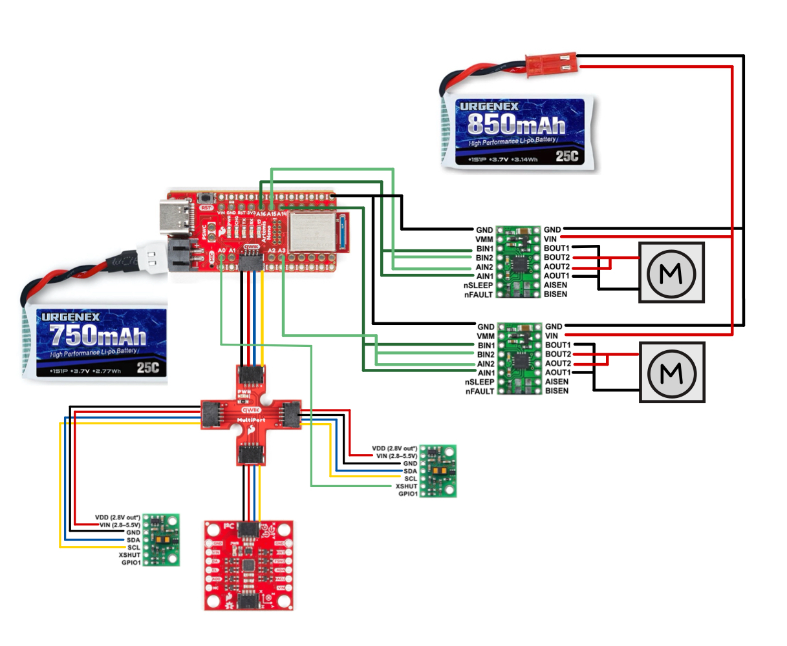
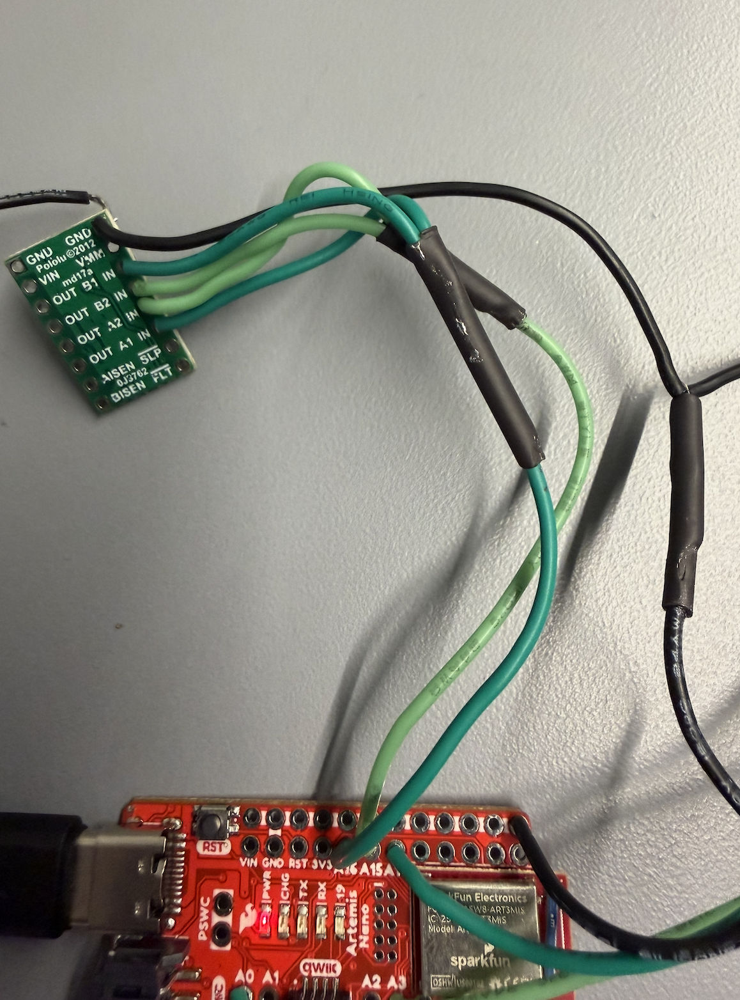
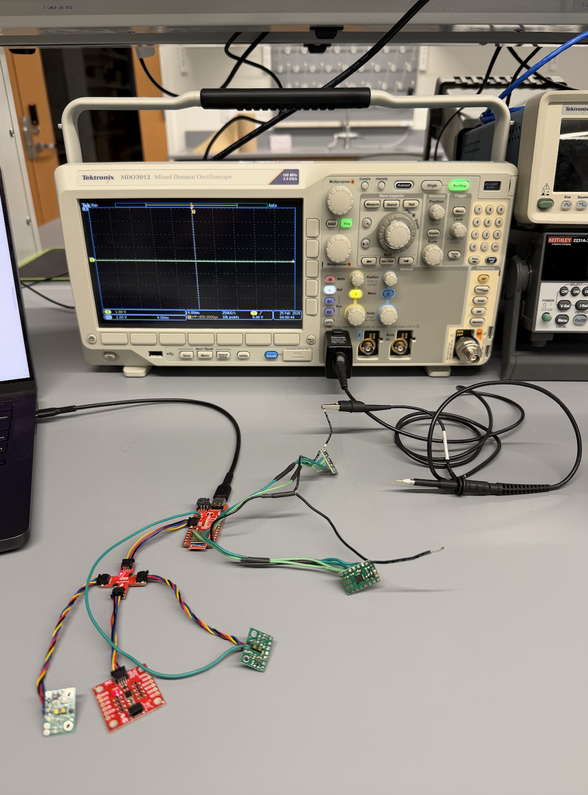
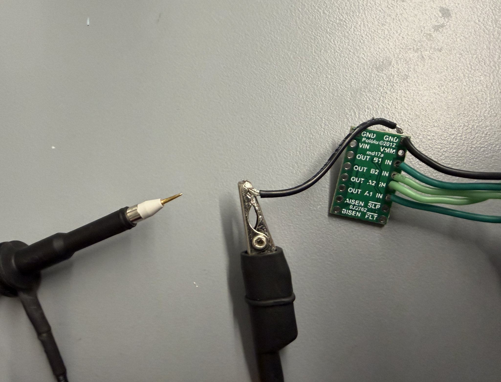
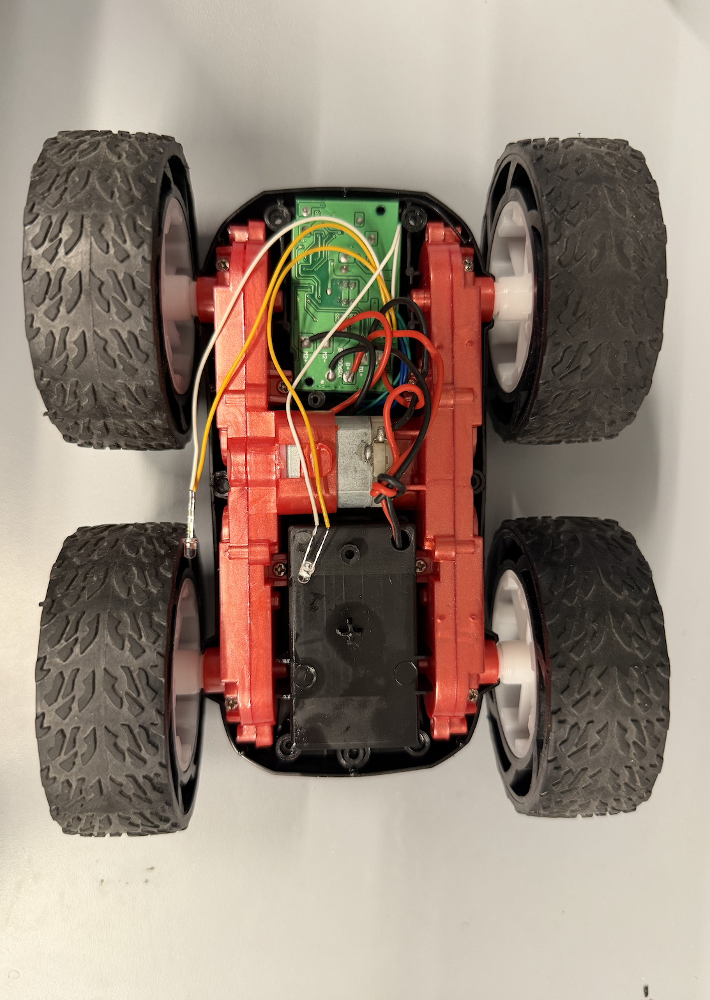
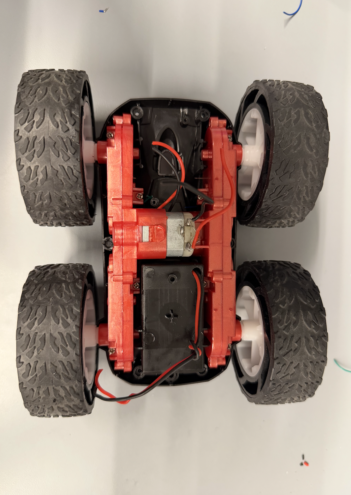
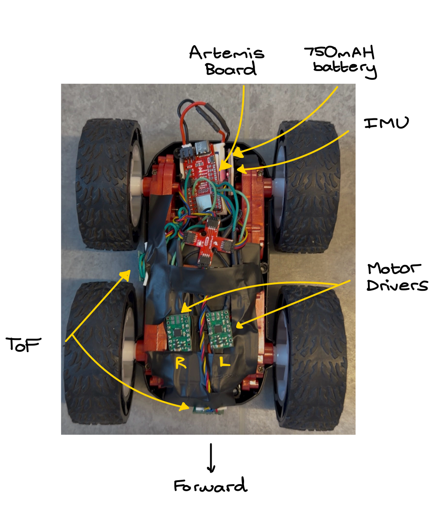

Lab 4: The Motors and Open Loop Control
Goal: Change from manual to open loop control of the car. Drive car with pre-programmed series of moves with Artemis and two dual motor drivers.
Prelab
In order to deliver enough current for the car to go fast, we are parallel-coupling the motor drivers, so essentially two channels will drive each motor.
Q: Which pins will I use for control on the Artemis?
The pins I use for control need to be PWM capable, therefore, I am using pins 13, A14, A15, and A16.
Q: Why power the Artemis and motor drivers with separate batteries?
The Artemis and motor drivers will be powered by separate batteries to avoid noise and keep the entire system stable. It also helps with battery life, since there is less load on a single battery.
Q: How are you routing paths given EMI (electromagnetic interference), wire lengths, and color coding?
I made sure to color code my wiring for the motor controls, so the same color wires for IN1 and IN2. I also color matched the red and black for VIN and GND from the battery and across the entire setup. In terms of wire length, I made sure my wires were long enough when necessary, and adjusted as I worked if a wire was too long. This way, I can prevent an overcrowding of wires. In terms of EMI, I made sure wires from batteries were longer and tried to keep them further from any sensors.
Soldering
Before starting the tasks, I soldered both motor drivers to the Artemis board.
This is my wiring diagram:

Tasks
Task 1: Power and Signal Inputs to One Motor Driver
For this task, I connect the necessary power and signal inputs to 1 dual motor driver. I keep the motor driver powered from an external power supply with a controllable limit, for easier debugging.

Q: What are reasonable settings for the power supply?
Since the battery will be supplying about 3.7V, that is what I set the power supply to recreate what the battery power would be.
Task 2: Generating PWM Signals
First, I wrote setup code for the A1IN, B1IN, A2IN, and B2IN pins for the LEFT motor control board.
#define AB1_IN_LEFT 16
#define AB2_IN_LEFT 15
void setup() {
pinMode(AB1_IN_LEFT, OUTPUT);
pinMode(AB2_IN_LEFT, OUTPUT);
}Next, I connected the Artemis board to the oscilloscope – this is what it looks like.

Zoomed in view of probes with the motor control board. The ground clip is connected to the GND pin of the motor control. The sharp probe is used to check the A1IN, B1IN, A2IN, and B2IN pins.

Now, with the pins set up, I send the following PWM signals to the 4 pins. A1IN and B1IN should get readings, while A2IN and B2IN should not.
void loop() {
analogWrite(AB1_IN_LEFT, 100);
analogWrite(AB2_IN_LEFT, 0);
}Now I can visualize the signals on the oscilloscope!
Task 3: Taking the Car Apart
Here is the car without anything removed.

This is the car with the control PCB removed.

Task 4: Running Motor in Both Directions
For this task, I had to demonstrate that I can run the motor in both directions. I wired the first motor control board to the motor and got the wheels spinning.
Then, I wrote code to loop between driving one direction then switching.
Task 5 & 6: Second Motor Driver and Powering With Battery
Next, I finished soldering the second motor driver, then connected the 850 mAh battery. Now, both wheels can spin.
Task 7: Installing Boards Into Car
Using a lot of electrical tape, I attached all the boards into the car. A detailed picture of the car with all sensors and boards labeled is below.

Task 8: Lower Limit PWM Signals
I tested the minimum PWM signal to get the car moving forward on the lab room tile. It was 35.
void forward() {
analogWrite(AB1_IN_LEFT, 35);
analogWrite(AB2_IN_LEFT, 0);
analogWrite(AB1_IN_RIGHT, 0);
analogWrite(AB2_IN_RIGHT, 35);
}To get the car spinning, I used a PWM signal of 200, a lot higher. This is partially because the battery had a lot less power from testing.
void spin_in_place() {
analogWrite(AB1_IN_LEFT, 35);
analogWrite(AB2_IN_LEFT, 0);
analogWrite(AB1_IN_RIGHT, 35);
analogWrite(AB2_IN_RIGHT, 0);
}Task 9: Wheel Calibration
To test if the motors spin at the same rate, I did a straight line driving test. A good result would be if the car can drive in a straight line for at least 6 ft. As you can see in the video, the car stayed in a straight line for a lot longer than 6 ft, so no calibration necessary.
Task 10: Open Loop Control
For this task, I demonstrate open loop control of the car. It can drive forward, backward, and turn with programmatic inputs.
void open_loop_demo() {
forward();
delay(3000);
spin_in_place();
delay(2000);
}Collaboration
This lab involved a lot of soldering and making sure I connected the right pins to the motor control boards. I referenced Aidan Derocher's website for the overall wiring. I also used his website to understand how to test the motor boards for power with the oscilloscope. During Open Lab hours, I also got a lot of help with understanding how to use the oscilloscope and the power source for testing. Finally, I used Claude to style my website by providing my lab report text and images/videos.